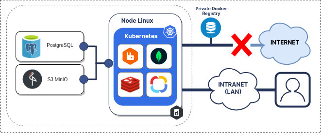
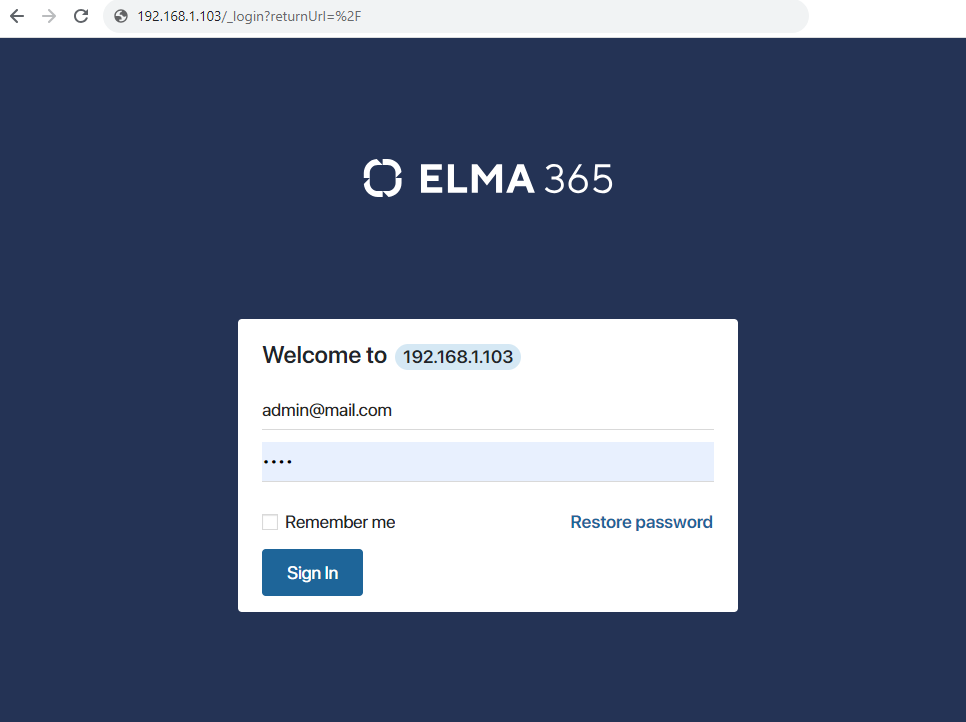

BRIX Standard can be installed in a closed-loop network without internet access. The Kubernetes-in-Docker (KinD) installation is a simple option and allows you to run a local Kubernetes cluster using the Docker container node in a closed loop without internet access.
The installation consists of five stages:
- Prepare infrastructure.
- Download files for the offline version.
- Install Docker on the computer in the closed loop.
- Fill out the configuration file.
- Run the installation script.

Step 1: Prepare infrastructure
The infrastructure refers to the necessary components required for the operation of the BRIX On-Premises application.
начало внимание
The customer deploys the dependent components using their own resources. All tasks related to organizing a fail-safe local architecture and setting up the resilience of dependent components also remain the responsibility of the customer.
конец внимание
Components required for operation of the BRIX On-Premises:
- Docker.
- PostgreSQL.
- MongoDB.
- RabbitMQ.
- Redis.
- S3 (MinIO).
Built-in data storage components are suitable for demonstration purposes and in special cases for organizing testing and development platforms. If no connection parameters to external databases and S3 storage are specified in the additional installation settings, the built-in data storage components (PostgreSQL, MongoDB, RabbitMQ, Redis, MinIO) will be used automatically.
In the context of this article, the PostgreSQL database and S3 object storage will be external. For more details on how to deploy the database and object storage, read the articles: PostgreSQL and MinIO (S3). Standard connection strings and passwords are used to connect to PostgreSQL and MinIO (S3).
Step 2: Download files for the offline version
- On a computer with internet access, download the required files for the offline version (file size ~4-5 GB) by executing the following command:
sudo curl -fsSL -o elma365-docker-offline.sh https://dl.elma365.com/onPremise/latest/elma365-docker-offline-latest && \
chmod +x elma365-docker-offline.sh && \
./elma365-docker-offline.sh
All the download links for BRIX distribution packages of other versions are provided in Links for downloading BRIX distribution packages.
The boot script will create a directory named elma365-X.Y.Z in the directory from which it was launched and will download the necessary files into it.
When the files for the offline version are downloaded, the boot script will display information about which directory the files were downloaded to, and suggest copying them to a computer in the closed loop.
Example of executing the boot script:
- After downloading all files, transfer the obtained
elma365-X.Y.Zdirectory to the server where the installation will be performed.
Step 3: Install Docker on a computer in a closed loop network
Install Docker suitable for your operating system on a local computer in a closed-loop network.
начало внимание
KinD does not support creating a Kubernetes cluster with Cgroups v2. More about possible errors can be found in official documentation.
конец внимание
Step 4: Fill out the configuration file
Upon the first launch, the installation script will create a configuration file named config-elma365.txt in the directory from which it was run.
- On the closed-loop computer where offline version files have been copied, navigate to the
elma365-X.Y.Zdirectory and run the BRIX installation script to create a configuration file, executing the following command:
sudo ./elma365-docker.sh --offline
начало внимание
To create a new default configuration file, rename the existing config-elma365.txt configuration file and run the installation script with the --new-config key.
конец внимание
- Make changes to the configuration file
config-elma365.txtprepared by the installation script. - To quickly start BRIX Standard, uncomment and fill in the required variables.
Filling out the main parameters in the config-elma365.txt configuration file may look as follows:
Where:
-
ELMA365_HOST=192.168.1.103is the IP address of the host machine, through which BRIX Standard will be accessible. Read more about creating a domain (FQDN) in Modifying BRIX Standard Parameters. ELMA365_EMAIL=admin@mail.comis the administrator email address.ELMA365_PASSWORD=testis the administrator password.ELMA365_LANGUAGE=en-USis the language of the installed system.
- Configure connection to external databases and object S3 storage.
начало примечание
Note
Built-in storage components are suitable for demonstration purposes and in special cases for organizing test and development benches. If connection to external databases and S3 storage is not specified in the additional installation parameters, the built-in storage components (PostgreSQL, MongoDB, RabbitMQ, Redis, S3 MinIO) will be used automatically.
конец примечание
To connect to an external PostgreSQL database, uncomment and fill in the ELMA365_DB_PSQL parameter (specify the connection string obtained in step 6 of the PostgreSQL article). For example:
Uncomment and fill in the following variables to connect to S3 storage:
ELMA365_DB_S3_ADDRESS,ELMA365_DB_S3_BUCKET,ELMA365_DB_S3_USER,ELMA365_DB_S3_PASSWORD,ELMA365_DB_S3_REGION,ELMA365_DB_S3_METHOD, andELMA365_DB_S3_SSLparameters (specify the connection parameters obtained at step 10 of the MinIO S3 article).- To enable connection proxying to S3 via BRIX, set the value to
truein theELMA365_DB_S3_GATEWAYparameter.
Example:

- Since the BRIX Standard is installed in a closed loop (without internet access) with the
--offlinekey, theELMA365_PRIVATE_REGISTRY_URLparameter will automatically be filled out during configuration file generation.
начало внимание
The ELMA365_PRIVATE_REGISTRY_URL parameter is automatically filled with the IP address from the interface to which the default route points.
конец внимание
Specify the address of the private Docker image repository in the ELMA365_PRIVATE_REGISTRY_URL parameter:

Where:
ELMA365_PRIVATE_REGISTRY_URL=192.168.0.103:5000is the URL for the private repository with theip:portformat:
192.168.0.103is the IP address to which the created local Docker image repository will be bound.5000is the port to which the created local Docker image repository will be bound.
If you don't have your own private repository, you can use a local private repository. To do this, uncomment the ELMA365_LOCAL_PRIVATE_REGISTRY_ENABLE parameter and set its value to true.
Important: if Docker is installed via Snap, uncomment and modify the paths to folders/directories for parameters: ELMA365_INSTALL_DIR, ELMA365_BACKUP_DIR, ELMA365_PRIVATE_REGISTRY_DIR, for instance:
ELMA365_INSTALL_DIR=/mnt/elma365/docker.ELMA365_BACKUP_DIR=/mnt/elma365/backup.ELMA365_PRIVATE_REGISTRY_DIR=/mnt/elma365/registry.
Read more about the config-elma365.txt configuration file parameters in Modifying BRIX Standard Parameters.
Step 5: Run the BRIX Standard installation script
After starting, the installation script will place the necessary images in the Docker image repository. Then, the BRIX Standard application will be installed, taking 10-15 minutes.
начало внимание
A default route must be set in the system.
конец внимание
- Start the previously downloaded installation script using the command:
sudo ./elma365-installer-docker.sh --offline
Once installation is complete, a message about the successful installation of the BRIX Standard application will be displayed in the script.

- Launch the browser and open the BRIX Standard application login page at
http://ELMA365_HOST. TheELMA365_HOSTparameter was specified in theconfig-elma365.txtfile at the configuration file filling out step.
In the provided example, the following application login page address is used: http://192.168.1.103.

- For login, use the administrator's email address and the password that was used in the
config-elma365.txtconfiguration file under the parametersELMA365_EMAILandELMA365_PASSWORD.
In the provided example, they are:
- Login: admin@mail.com.
- Password: test.
- Click the Sign In button.
The BRIX system activation window will open.
- Activate the system. For more details, see Activate On-Premises.
The offline installation of BRIX Standard has been successfully completed.
начало внимание
Save the config-elma365.txt file for future updates.
конец внимание
Found a typo? Select it and press Ctrl+Enter to send us feedback